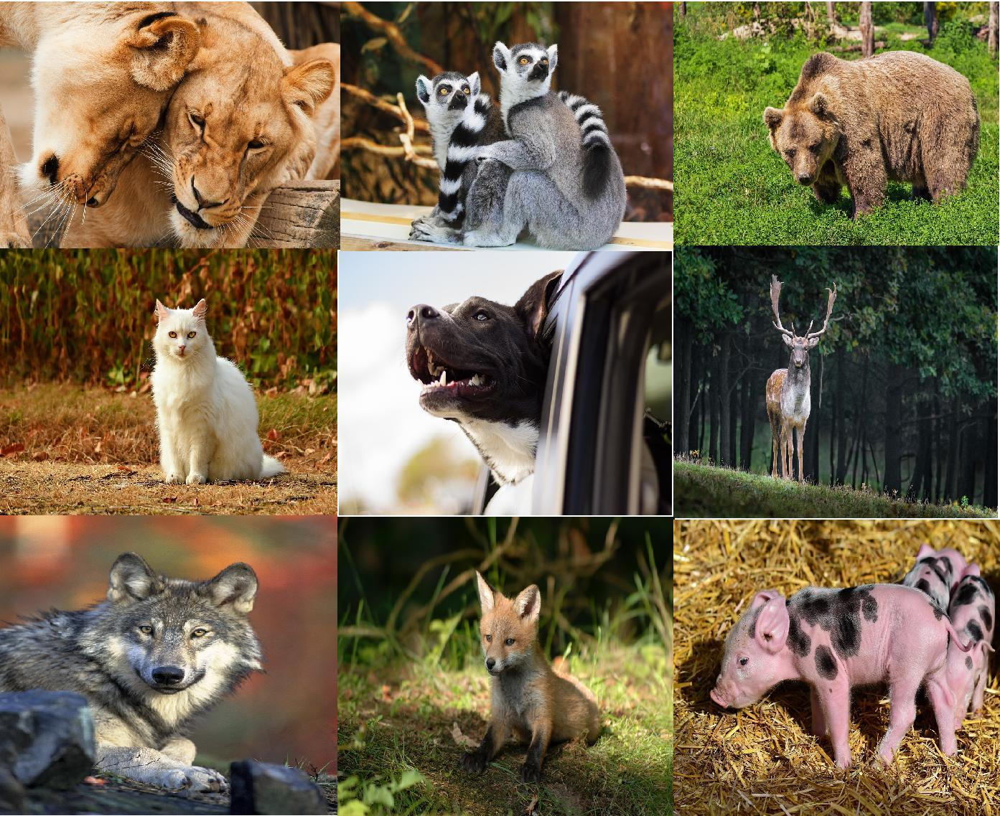
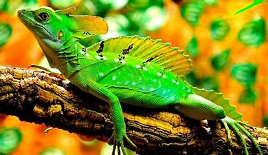
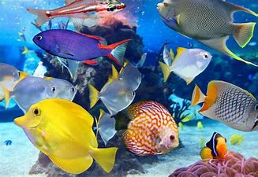
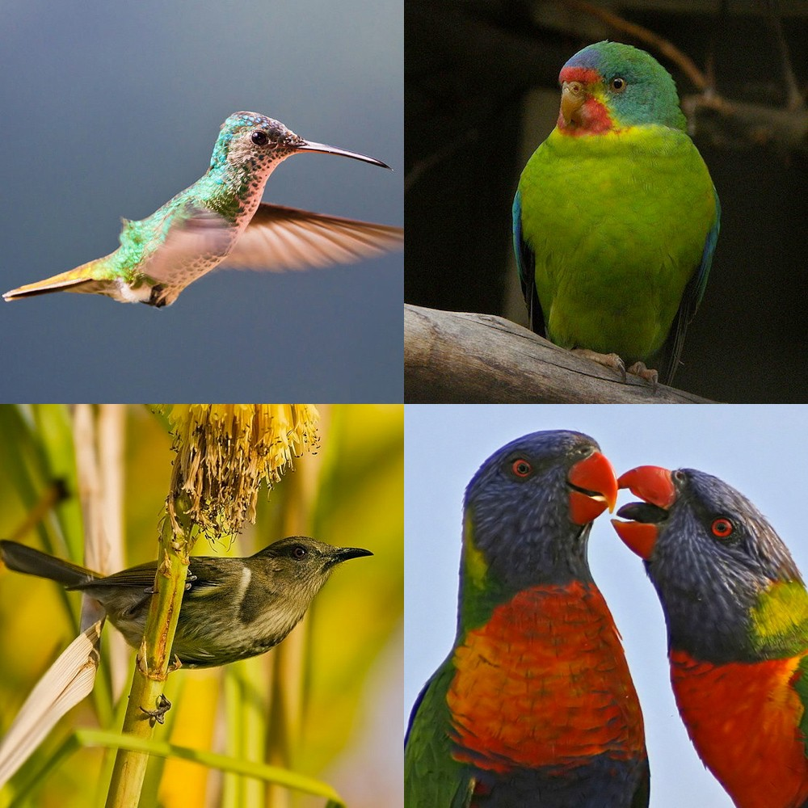
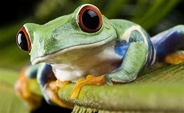
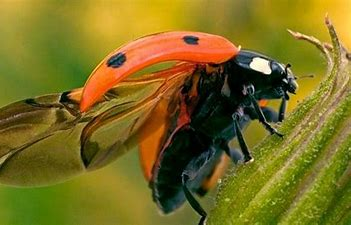

¿QUE SON LOS ANIMALES?
Los animales son organismos pluricelulares, heterótrofos, con células sin pared celular, con un sistema nervioso capaz de responder
a estímulos externos, con células organizadas en tejidos y con la presencia de blástula durante su desarrollo embrionario.

Estos seres vivos cuentan con diferentes características, muchas de ellas son comunes en ciertas especies, por ejemplo, la manera en la que ingieren sus alimentos, su reproducción sexual, la forma en la que puede absorber el oxígeno con la respiración, entre otros.
Pero además de todas estas características, el reino animal cuenta con otras más específicas que van a ser explicadas a continuación.
MAMIFEROS
Se trata de todos aquellos seres de sangre caliente y vertebrados que forman parte de la clase mammalia, se caracterizan porque las hembras tienen glándulas mamarias capaces de generar leche y dotar de alimento a sus crías.
Actualmente existen 5.486 especies de mamíferos
y allí destaca el ser humano. La mayoría de estas especies son vivíparas a excepción de los seres monotremas, ejemplo, el ornitorrinco.

REPTILES
Dentro de las características básicas de estas especies, está el tener piel escamosa y resistente, también cuentan con pulmones bien desarrollados,
sistemas circulatorios de circuito doble, conservación del agua por un sistema excretor especial, extremidades fuertes, fertilización interna con huevos terrestres de fuerte cascarón. Otra característica es que los reptiles pueden controlar
su temperatura corporal solo cambiando de lugar. Dentro de esas especies se encuentran los cocodrilos, tortugas, serpientes y lagartos.

PECES
Se trata de animales marinos, todos son vertebrados y generalmente ectotérmicos, esto quiere decir que pueden regular su temperatura a través
del medio ambiente, además, se caracterizan por respirar mediante las branquias. Generalmente se encuentran cubiertas por escamas, tienen aletas que permiten una buena movilidad en el agua
y las branquias, las cuales permiten que puedan captar el oxígeno que se encuentra en el mar.

AVES
Se trata de todas aquellas especies de sangre caliente, vertebradas que pueden caminar, mantenerse erguidas con sus extremidades posteriores y usar las anteriores para volar, pues estas han evolucionado
hasta convertirse en alas que permiten que las aves puedan mantenerse en el aire.

ANFIBIOS
Son aquellas especies anamniotas y vertebradas, ectotérmicas y tetrápodos que cuentan con respiración branquial en las fases larvarias,
pero que pasan a ser pulmonares cuando alcanzan la edad adulta.
Se diferencian de los vertebrados porque pueden transformarse a lo largo de su desarrollo, pues como se explicó con anterioridad, tienen branquias
cuando nacen, pero se vuelven seres con pulmones en la edad adulta, a esto se le llama metamorfosis.

INSECTOS
Son todas aquellas especies invertebradas y artrópodos que se caracterizan por tener tres pares de patas, un par de antenas y dos pares de alas,
algunas de estas alas tienen la capacidad de reducirse, pero también hay casos de insectos que no cuentan con ellas, por ejemplo, las hormigas.
Las moscas y mosquitos también forman parte de los animales insectívoros, tal como en el caso de las mariposas
